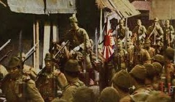

kedatangan Jepang
Jepang kali pertama mendarat di Indonesia melalui Tarakan, Kalimantan Timur, pada 11 Januari 1942.kedatangan jepang kemudian memukul pasukan hindia belanda yang kala itu juga ke Tarakan untuk mengeruk sumber daya alam.
setelah itu, Jepang juga memduduki wilayah-wilayah lain di Indonesia, yakni Pontianak pada 29 febuari 1942. pendudukan jepang pun lantas meluas hingga Ke jawa. jepang berhasil menguasai Batavia dan seluruh Pulau Jawa sehingga kemudian membuat belanda menyerah tanpa syarat pada 10 febuari 1942. Belanda menyatakan menyerah kepada Jepang dalam sebuah Perundingan yang terjadi di rumah dinas seorang perwira di kawasan Landasan Udara Kalijati, Subang.
Perundingan yang dikenal sebagai Perjanjian Kalijati itu menghasilkan kesepakatan dalam dokumen kapitulasi atau penyerahan tanpa syarat Hindia Belanda kepada Jepang. Dengan ditandatanganinya Perjanjian Kalijati, Belanda harus hengkang dan Indonesia resmi menjadi jajahan Jepang.
Sambutan rakyat Indonesia kepada Jepang
Pada awal kedatangannya, Jepang mendapatkan sambutan baik dari rakyat Indonesia karena dianggap telah mengusir penjajah belanda. Jepang juga memberikan janji Kemerdekaan bagi Indonesia serta berniat membantu mengusir penjajah belanda. Jepang mengambil simpati rakyat dan seolah mendukung Perjuangan Kemerdekaan Indonesia melalu berbagai cara. Salah satunya memutar lagu Indonesia Raya melalui radio.
Jepang pun membentuk berbagai organisasi dan gerakan untuk menarik simpati rakyat Indonesia. Salah satunya adalah Gerakan Tiga A (3A), yakni Nippon Pelindung Asia, Nippon Pemimpin Asia, dan Nippon Cahaya Asia.